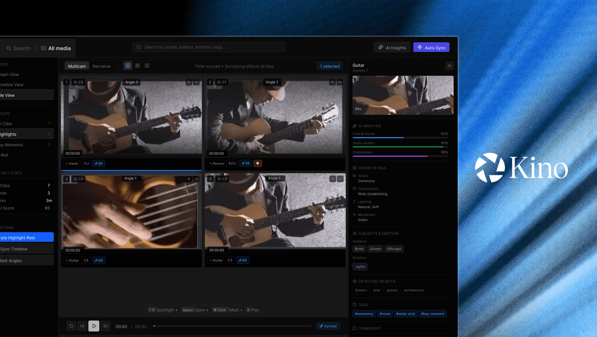
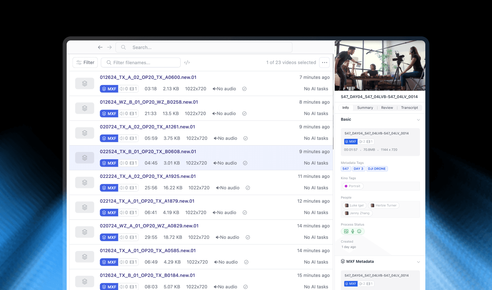
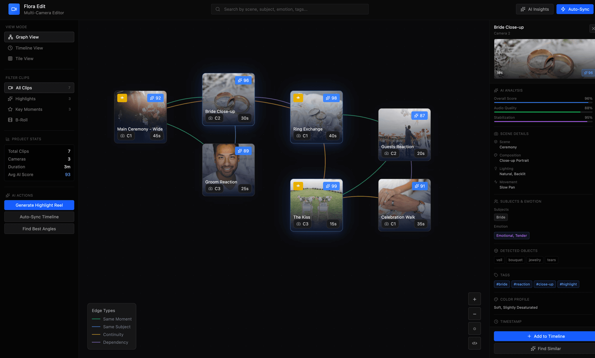
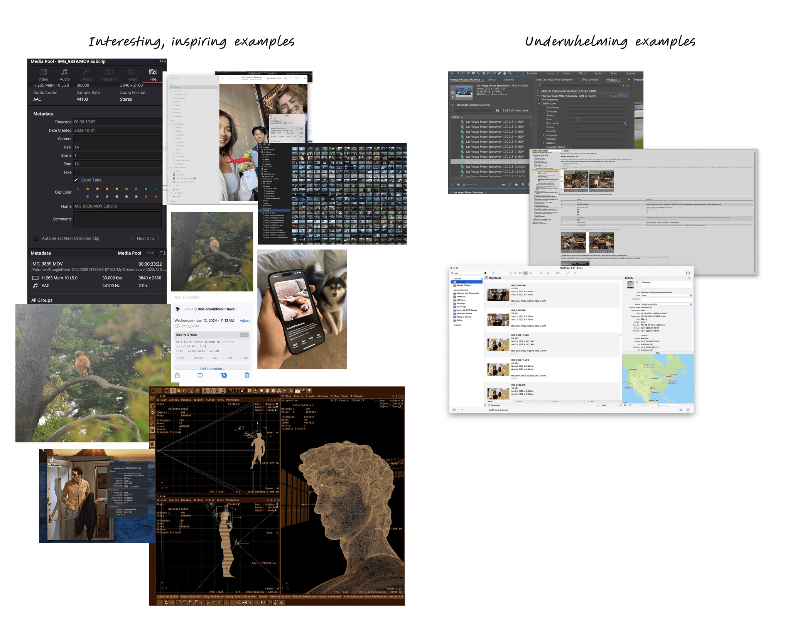
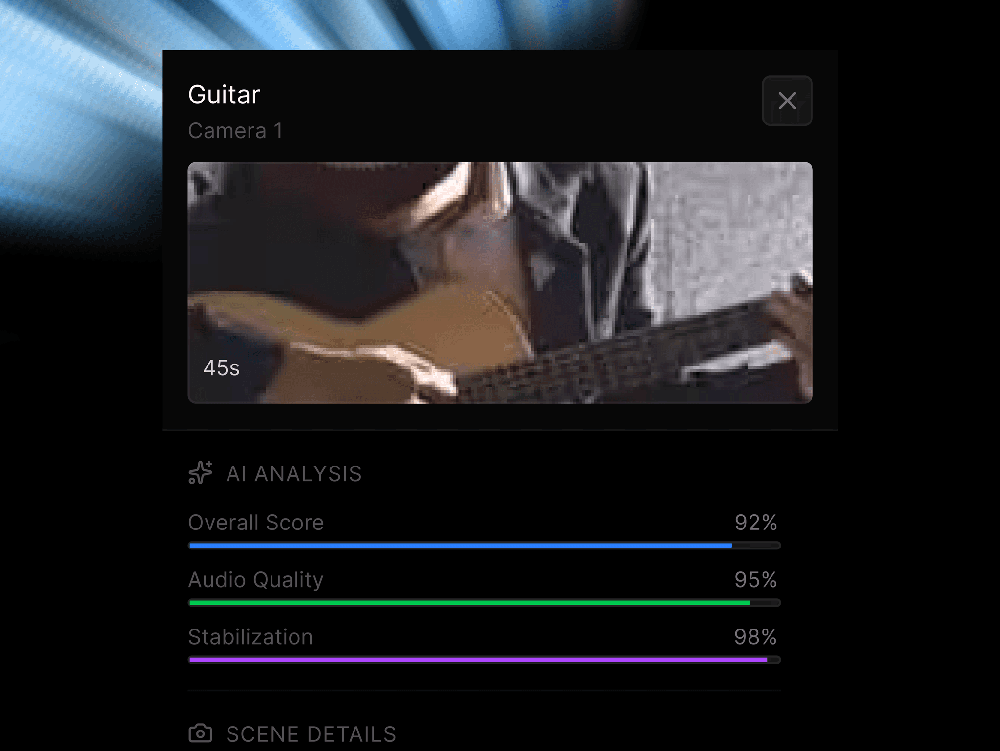
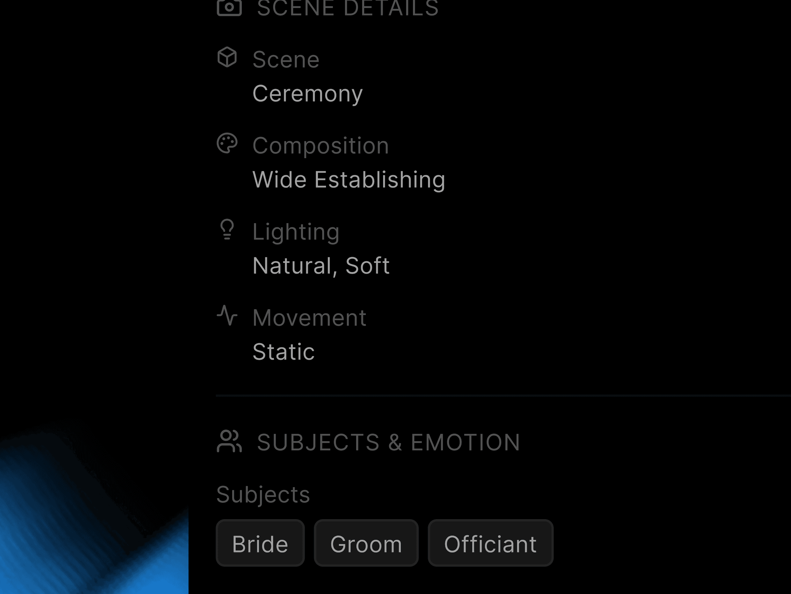
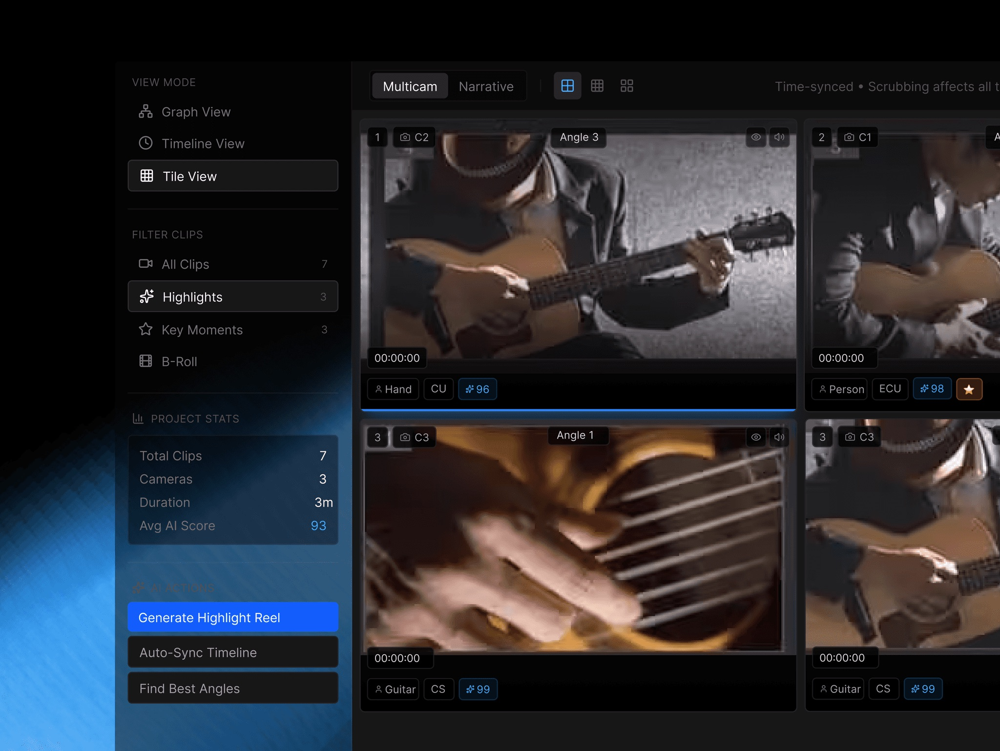
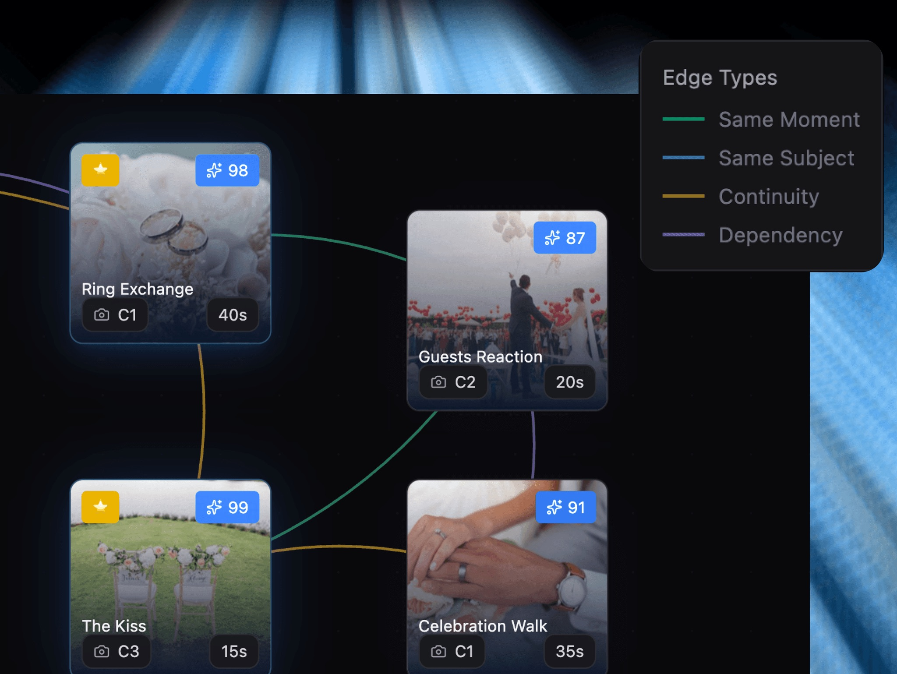

Overview
At a glance
Kino is the new home for video editors
Backed by YCombinator and AI Grant, Kino is an AI video assistant that helps editors search and log footage using natural-language descriptions.

The Problem
Today, traditional multicam editing forces filmmakers to mentally track dozens of disjointed clips & massive file paths
While the platform excelled at precise searches across transcripts and people detection, it faced a critical UX challenge when dealing with complex multicam shoots. My work was a 1-week exploratory design sprint to answer the question:
How might we use AI to…
create a simplified preview experience that helps filmmakers instantly visualize and connect multiple angles of the same scene?
Solutions
A novel way to navigate through camera footage

Nodes: Relationship-focused navigation
Understand how footage relates—story structure, alternate angles, B-roll connections, reaction shots.
Grid: Comparison-focused navigation
Direct visual comparison and simultaneous playback
Spatial angle map view
Visualizes the physical setup and spatial relationships of cameras
Let’s go back to the start
What’s the experience of clicking a video and seeing that there are shots of the same scenes, from different angles?
Videos in Kino should have “exotic” metadata fields, and ones that allow for more interesting, interactive UI than simply displaying a string. Specifically, what does a Multicam View look like? How do we access the full page version of this view?
Keeping in mind these constraints
- There would be at most 10 shots corresponding to one scene.
- Some version of this view must exist in the Kino Inspector (RHS panel) as well as its own page
- A file’s name and its path can be very long
Research
Investigate interaction patterns
I studied how other video/photo editing products handle metadata - collecting standout interaction patterns, common pitfalls to avoid, and “delightful but useful” ideas worth borrowing. I broke down why each pattern works, where it breaks at scale, and how to adapt the best ideas to constraints and user goals.

Pain points
Designing for extreme data density
Multicam editing produces massive amounts of complex data. We had to support up to 10 simultaneous angles per scene, accommodate incredibly long file paths, and fit the UI seamlessly into both a full-page view and the right-hand Inspector panel.
As a result, the UI must adapt to the editor’s current task, not just display raw footage. Through user research, I observed 2 main mental models that editors usually think in
When building the stories…
They think in relationships
“What B-roll supports this interview?” “Where’s the reaction shot?”
When selecting the best take…
They think in comparisons
“Which angle has better framing?” “Is camera 2 or 3 better here?”
Augmenting the current experience
AI as an editing companion




Key Takeaways
-
AI should anticipate, not just organize
Having rich metadata (composition, emotion, audio quality) is only the baseline. I learned that the true value of AI in creative tools is moving the system from a passive database to an active collaborator - one that can eventually understand editorial intent and proactively suggest the right angle for the moment.
-
Personalization is the next frontier of pro tools
Watching how editors repeatedly make the same types of selections taught me that scalable AI shouldn’t force a universal standard. The ultimate goal of a smart system is to learn an editor’s unique style and silently adapt the UI to surface those preferences in future projects.
-
Balance between depth and delivery
A 1-week exploratory sprint forced me to be ruthless with prioritization. By strategically relying on AI-generated blueprints and rapid prototyping tools, I learned how to balance extreme product complexity with strict delivery timelines
Next case study
Socratica